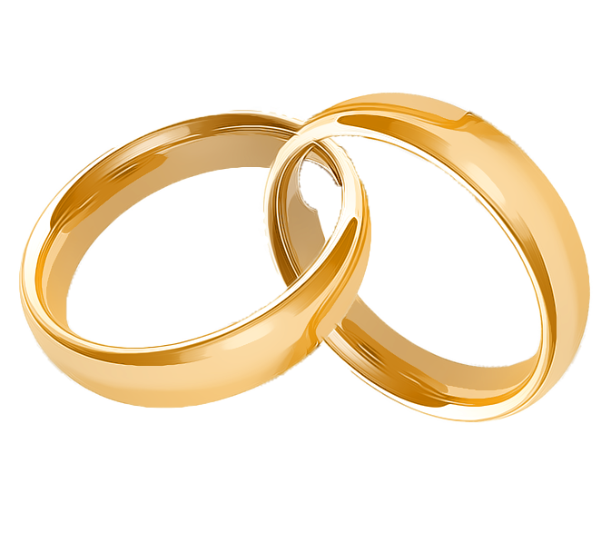

Helyszínek
Szertartás
Fotózás

Lakodalom

Program
"Valahogy így lesz, ez biztos."
- 13:45 - Egyházi szertartás
- 14:30 - Fotózás
- 16:00 - Koktélozás
- 18:00 - Vacsora
- 22:00 - Torta
- ...-4:00 - Tánc hajnalig
Ajándékok
A legnagyobb ajándék nekünk, ha ott leszel.
Kérlek, gyere el, és ünnepelj velünk.
Kérdések & Válaszok
Utazás és szállás
Lesz valamilyen szerevezett szállítás?
Nem, mi csak a templomban fogunk találkozni 13:15-kor.
Hol tudok majd parkolni?
A parkolás az első kerületben hétvégén ingyenes! A helyszínek közel vannak egymáshoz, így nem lesz szükséged autóra.
Hogy tudok haza jutni éjszaka?
A 916-os busz egész éjjel üzemel, és eléri a város minden nagyobb forgalmi csomópontját.
Ételek és ünnepségek
Szeretnék valamilyen meglepetést készíteni nektek, a partin. Kivel kellene beszélnem erről?
Beszélj Nagy Istvánnal. Csak küldj neki egy e-mailt a istvan.nagy@level.hu e-mail címre.
Mit vegyek fel? Van "dress code"?
Ami a legkényelmesebb nektek. Ha az segít akkor alkalmi viselet Hölgyek és Urak számára.
Szeretnék speciális ételt kérni (gluténmentes, laktózmentes, vegán stb.) Van erre lehetőség?
Csak dopj egy pár sort ide, és fogunk rá megoldást találni.
Egyebek, apróságok
Van egy problémám / kérdésem az esküvő napján. Kivel beszélhetek?
Nagy Istvánnal. A telefonszáma: +36 30 000 0000.
Hozhatunk gyerekeket?
Természetesen! Terveztünk nekik egy kis sarkot játékokkal és édességgel!
Mit gondoltok a kutyákról? Hozhatom az enyémet?
Szeretjük a kutyákat, és nyugodtan hozd magaddal a sajátodat. Az étterem kutya barát hely.
Kapcsolat
Ha bármilyen kérdésed van, kérjük, hívj / írj nekünk.
Mobil: +36 30 000 0000 (Eszter) / +36 30 000 0000 (Gergő)
Email: eszterandgergo@level.hu